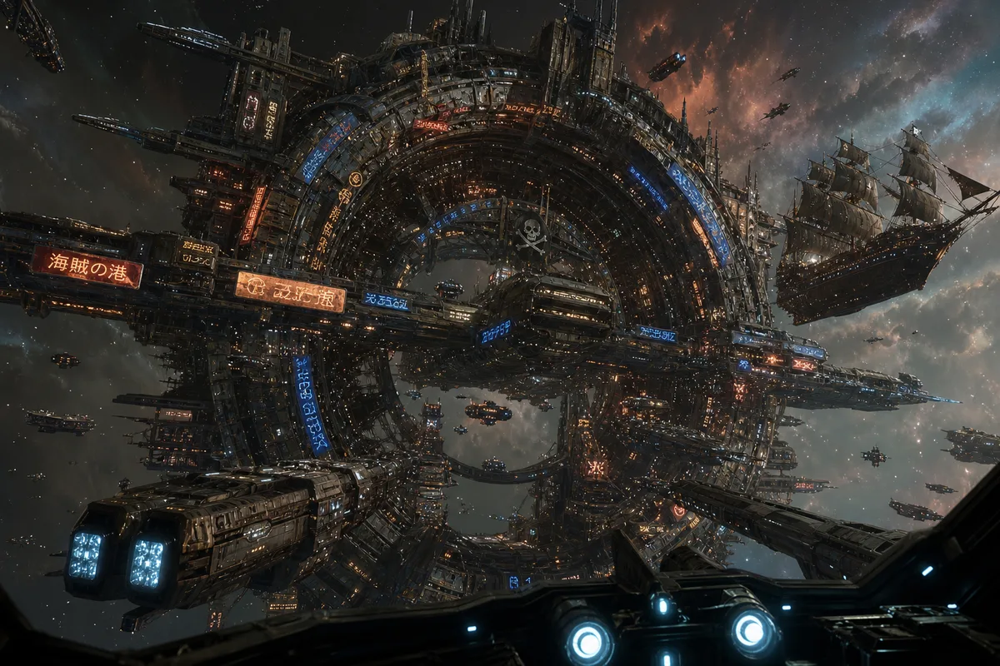
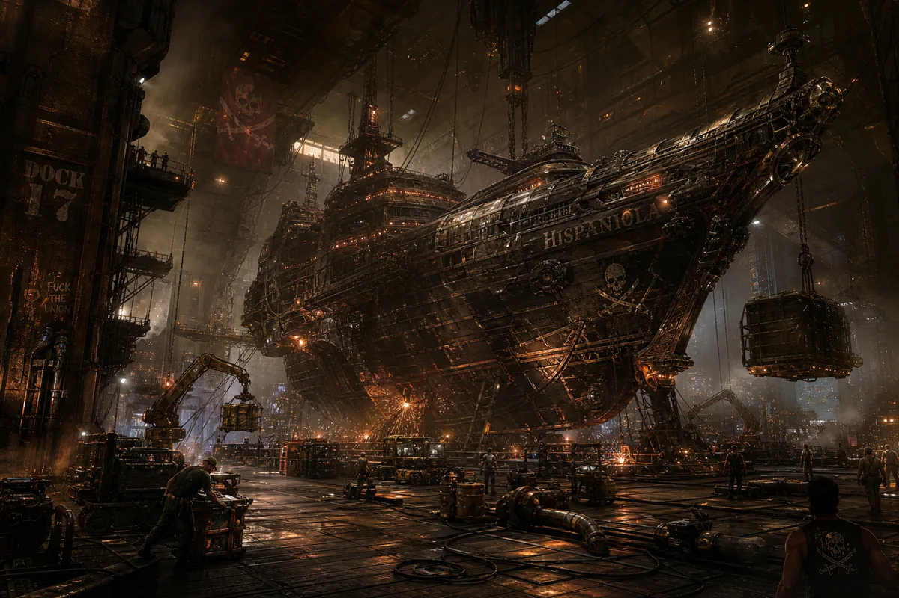
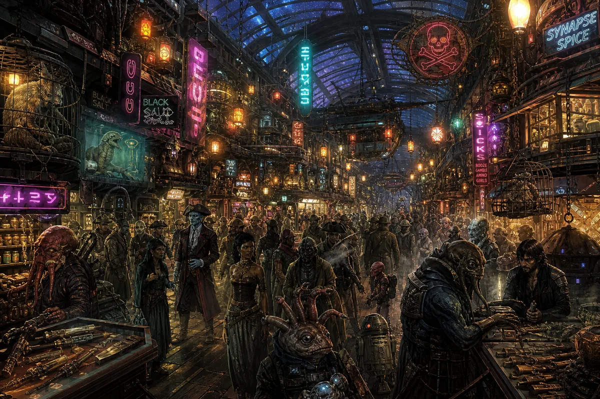
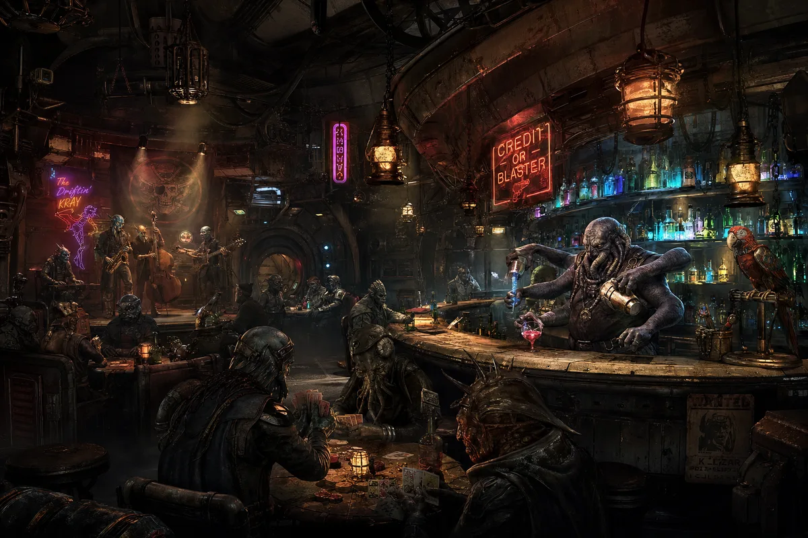
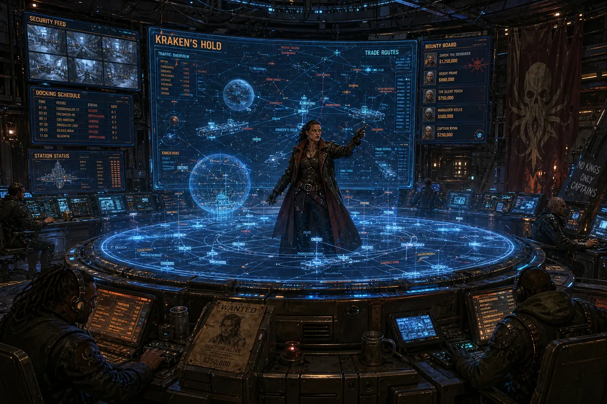
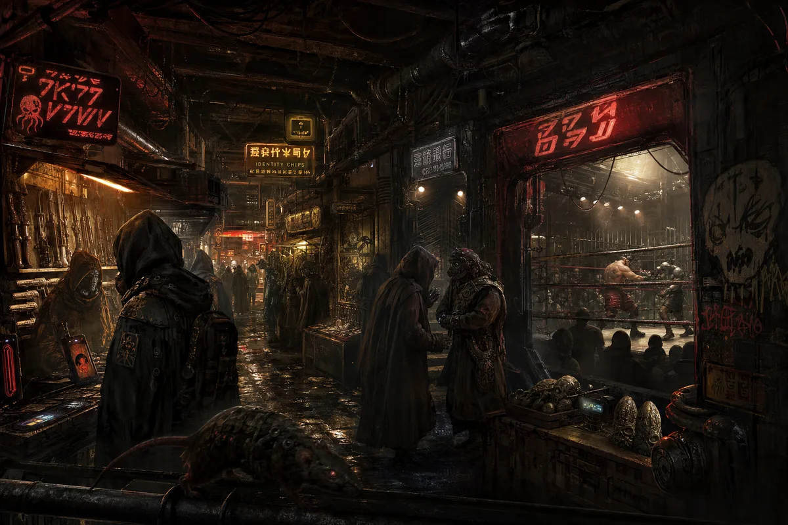

Port Nowhere was not built. It accumulated. A decommissioned Imperial battle station at its core, then a captured freighter welded to the starboard side, then an asteroid towed in for raw materials, then another ship, then another. It grew like a reef — organic, unplanned, structurally questionable. The station rotates for gravity on the outer ring. The inner core is zero-G. The transition zones are where you lose your lunch and your wallet.

Three hundred and forty-seven berths. Two hundred functional. The Hispaniola sits in Berth 42 — the prime spot, closest to the bar, farthest from security. Silver pays triple for the privilege. The dock crews are the hardest workers on the station — welders, fuel runners, cargo handlers — because the ships that dock here do not wait. A pirate ship stays twelve hours. Load, unload, refuel, resupply, and gone. The magnetic clamps were stolen from an Imperial dry dock. They still bear the Navy seal. Nobody has bothered to paint over it.

The Promenade is the main commercial artery of Port Nowhere — a kilometer-long corridor of shops, stalls, and improvised storefronts under a transparent dome that shows the stars. Everything is for sale. Weapons — legal and otherwise. Navigation data — fresh and fabricated. Star charts to places that may or may not exist. Alien food from species nobody has catalogued. Medicine. Poison. Both from the same stall. The vendor with the best location sells information. His name changes daily. His prices do not.

Every station has a bar. Port Nowhere has forty-seven. But The Blind Parrot is THE bar — the one where captains meet, deals are sealed, crews are recruited, and wars are ended with a handshake over something amber. The bartender is a four-armed Kaleshi named Grix who has been pouring drinks since before the station had atmosphere. He remembers every face, every drink, every debt. The house rules are carved into the bar top in seven languages. Rule One in all of them: "No weapons on the bar. Under the bar is fine."

Port Nowhere has no government. It has Station Command — a circular room in the core where the Administrator and her operators keep the station from flying apart. The Administrator is a woman named Kessler — ex-Navy, ex-pirate, ex-everything. She walked away from every faction and built this place because she was tired of taking orders and tired of giving them. The holographic display in the center shows every ship in a ten-thousand-kilometer radius. Wanted posters rotate on the screens. Half the people on the wanted posters are drinking at The Blind Parrot right now. Kessler knows. Kessler does not care.

Every station has its underside. Port Nowhere's is three levels deep — a labyrinth of maintenance tunnels, abandoned compartments, and improvised spaces that the station schematic does not acknowledge. Down here, the things that cannot be sold on the Promenade are sold. Forged identity chips. Stolen military hardware. Navigation data to Imperial convoy routes. Information brokers who know things that could start wars. The lights are red because the white ones were scavenged years ago. The rats are not rats. They are something else. Nobody has classified them. Nobody wants to.
No Imperial Navy within sensor range. If they come, the station goes dark. Every ship scatters. Rendezvous at the backup coordinates in 72 hours. This has happened four times. The station is still here. The Navy is still looking.
All debts are honored. Break a deal on Port Nowhere and you are done. Not dead — done. No berth, no drink, no fuel, no information. You become invisible. In a place that does not exist, becoming invisible is the worst thing that can happen.
Berth 42 is reserved. It belongs to the Hispaniola. It has always belonged to the Hispaniola. When Silver is not docked, the berth sits empty. No one touches it. No one questions it. The magnetic clamps hum on standby. Waiting.